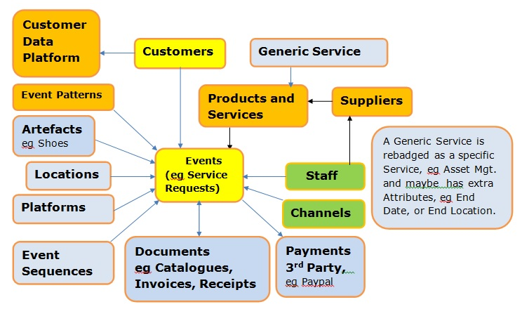

|
An Access Database is available.
We might also design a Data Mart which is very useful for providing data for Reports and Business Intelligence.
We would be glad to have your comments.
If you are new to Data Models, this page of my new Tutorial will help you understand the Data Model.
The Turtle Conservancy organises a number of different kinds of Events :-
1) The Turtle Ball in New York City.
2) Conserve species in their natural habitat, including land acquisition.
3) Maintain captive breeding programs to help restore natural populations.
4) Monitor and help to prevent trade that threatens species..
5) Outreach and spreading global awareness.
Comments in LinkedIn
When I posted
a question on LinkedIn to ask for comments on whether my approach reflected Best Practice in Data Modelling,
I received a comment from Jeff Albro at Boston University (Thanks, Jeff) recommending I check out this
article from Ralph Kimball on 'Declaring the Grain'
I have the highest regard for Ralph Kimball (like all of us, I am sure) so I was interested to read his article.
After I read it, I realise that I always start with a Dimensional Model or Data Mart with Facts at different levels to reflect
different levels of summarisation - ie different levels of granularity.
Subsequently I can create separate Data Marts, each with its own granularity.
Here is an example showing
Federated Data Marts
As a result, I decided, in this instance, to call my Facts 'Factoids' !!!
I would welome any comments at barryw@databaseanswers.org.
|
Step 1 - Start with our Canonical Data Model

|
Step 2 - Modify it for Turtle Conservancy
to create a Conceptual Data Model.
|
Step 3 - Create a Logical Data Model
to generate a physical Database.
|
Step 4 - Finally, create a Dimensional Model
to generate Reports.
|
Step 5 - First we set up the KPIs ...
For example, a 20% increase in Sales...
|
Step 6 - When a "spike" is recognised ...
|
Step 7 - An Alert is triggered ...
|
Step 8 - And a message is sent to
the CEO's Smartphone
|
Barry Williams
Principal Consultant
Database Answers Ltd.
London, England
July 1st. 2017
|
© Database Answers Ltd. 2017
|